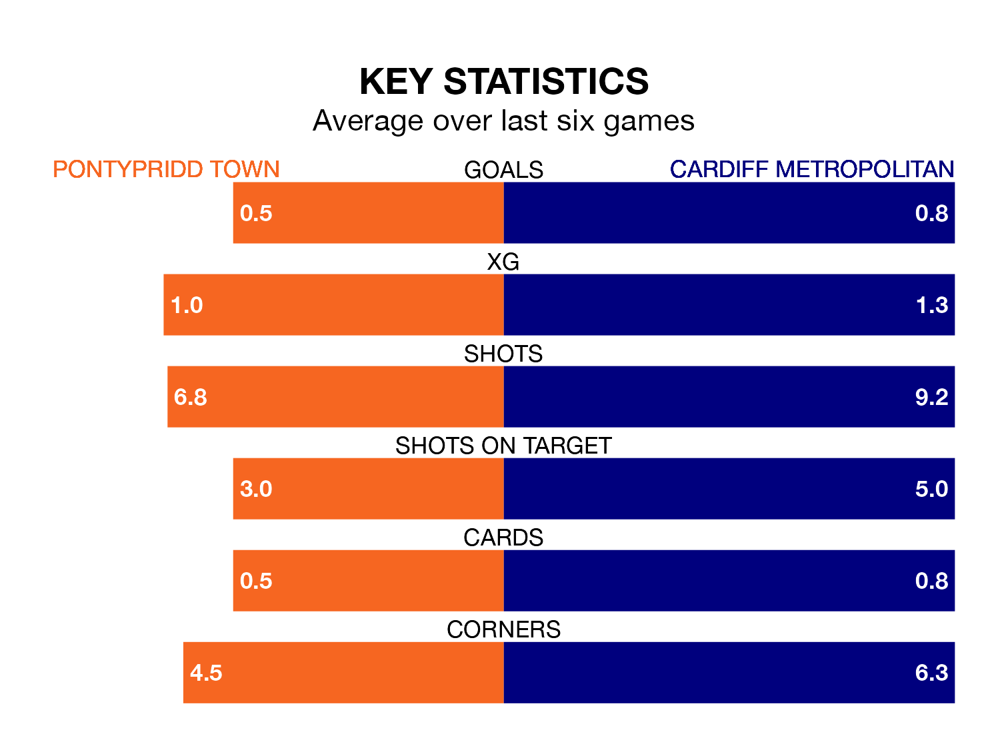

Wednesday's late match sees two relegation candidates play each other, as bottom of the table Pontypridd Town host sixth-placed Cardiff Metropolitan.
Pontypridd have picked up no points from their first zero Welsh Premier Womens League games, with no wins and no draws.
That is eight points less than Cardiff Metropolitan have collected, having won two and drawn two.
Pontypridd are in awful form in Welsh Premier Womens League, with no wins and six losses from their last six games.
With a win and a draw over that period, Cardiff Metropolitan's form is better – they have taken four points from 18, compared to Town's zero.
With four goals in eight games so far this season, the hosts are the league's lowest scorers with 0.5 goals per game. And they are conceding more than average, letting in 23 goals at a rate of 2.9 per game.
The away side are also below average scorers, with 1.4 goals per game, compared to a league average of 1.9. They have conceded 2.6 goals per game.
Over the last two years, Pontypridd and Cardiff Metropolitan have played each other on three occasions. Cardiff Metropolitan won all of them.
Their last meeting was on October 29, when Cardiff Metropolitan won 1-0 at home.
Pontypridd's last match was on November 26, a 3-1 loss against The New Saints Women, with getting the goal for Pontypridd.
Cardiff Metropolitan lost 4-1 against The New Saints Women last time out, on December 17, with on the scoresheet.
Updated: 15:34, 08/01/24